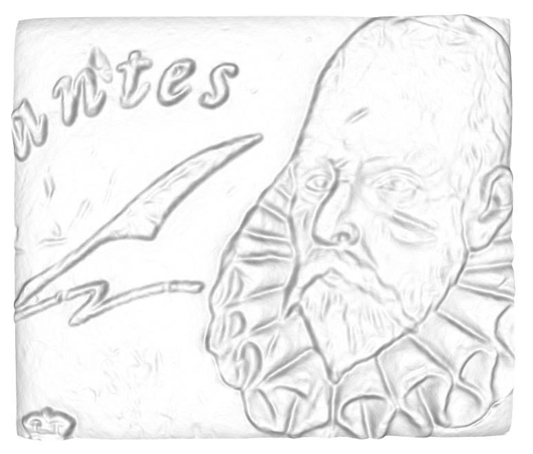

- code: https://github.com/mpizenberg/elm-webgl-depthmap
- demo: https://mpizenberg.github.io/elm-webgl-depthmap
Recently, I’ve been working on visualizations of depth maps in the browser and it turns out elm-explorations/webgl is great for that! This is a recap of how I used it.

Context
I’m currently working on a project doing 3D reconstructions of surfaces with very small surface variations such as textile or coins. We want to make what we are building easy to use for the other participants in the project that are neither scientists nor programmers. So making a webapp, based on wasm (from Rust) and Elm for the frontent is our current choice.
The approach we are using for the 3D reconstruction is called photometric stereo. It is based on images from the same point of view (but with varying lighting conditions). For this reason, the resulting 3D reconstruction is a 2D image with depth (from the camera) and normals for every pixel. In this research field, they are called depth maps (and normal maps), but they are also sometimes called height maps if the reference isn’t the camera. Here is an example of a pair of depth map (monochrome) and normal map (RGB) generated from photometric stereo.
Using WebGL in Elm for the 3D visualizations
WebGL works by putting together two programs called a vertex shader, and a fragment shader. It sounds fancy but it’s rather simple in fact. A 3D model, from the point of view of a GPU is just a set of 3D points (called vertices, or vertex), and instructions to display them. The vertex shader takes care of moving vertices, projecting their coordinates from the 3D world frame reference to the coordinates in the canvas of the web page. Then the fragment shader fills the canvas for every pixel interpolating colors with the nearest vertices. Shaders in WebGL are written in a language called GLSL. Here are the shaders for the demo web page.
// vertex shader (executed for each vertex)
void main () {
// extract RGBA from the texture at the given coordinates
vec4 tex = texture2D(texture, mapCoordinates);
// extract the normals to pass them to the fragment shader
vnormal = vec3(2.0 * tex.xyz - 1.0);
// use the camera projection matrix to transform points from world 3D
// coordinates to coordinates in the canvas.
// Note that we extract the "depth" (Z) from the 4th component of the texture (tex.w).
gl_Position = modelViewProjection * vec4(position, -tex.w * scale, 1.0);
}
// fragment shader (executed for each pixel)
void main () {
// normalizing the interpolated vnormal for the given pixel
vec3 normal = normalize(vnormal);
// computing the light intensity on that pixel (the color)
float intensity = dot(normal, directionalLight);
gl_FragColor = vec4(intensity, intensity, intensity, 1.0);
}
You may have spotted that only one texture is used. That’s because we pack together the normals (RGB) and the depth into a single PNG image with an alpha channel for the depth (RGBA). If you want to know more about WebGL, have look at the WebGL Fundamentals guide.
How about using a 3D rendering engine instead?
If you know 3D and JS, you know threejs. And if you know 3D and elm, you should know elm-3d-scene! It’s an amazing project so kudos to Ian who is leading that front. It’s still very young though. And at the time of doing that experimentation, it hasn’t stabilized yet on a way to use custom shaders, or geometry that is not internally indexed, currently limited to 16bits so a maximum of 65536 vertices per object. So unfortunaley we cannot directly use it for our geometry. But I hope this experiment will help shaping ways of doing it in the future. I am heavily using elm-3d-camera though, which helps a great deal being confident in the matrices being built for the camera viewpoint. Combined with elm-geometry, these enabled building the panning + orbiting + zooming interaction of the viewer. You can zoom with the mouse wheel, orbit by clicking and dragging, and pan by also holding the ctrl key while dragging.